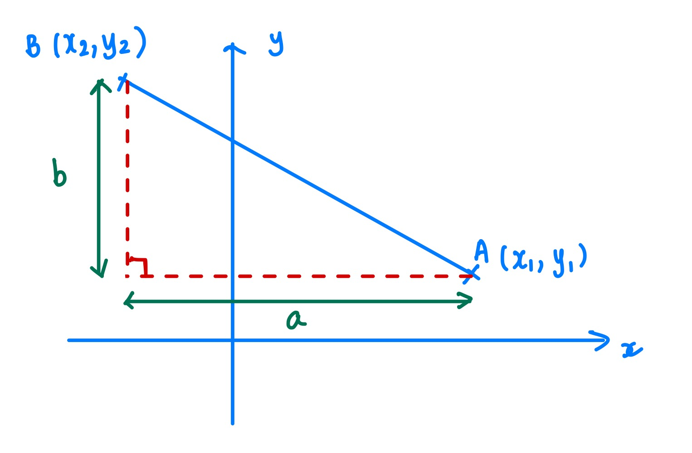
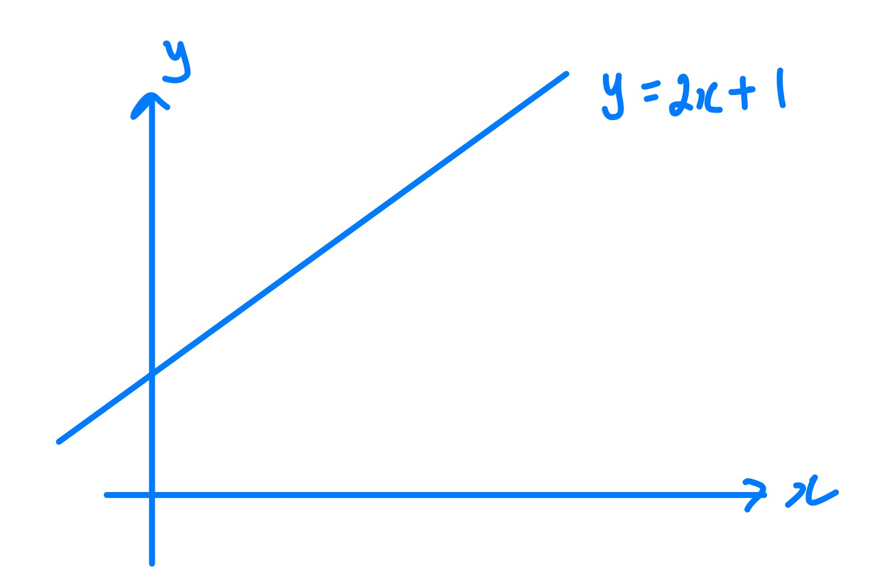
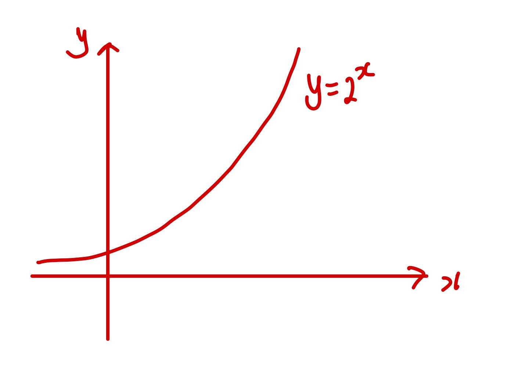
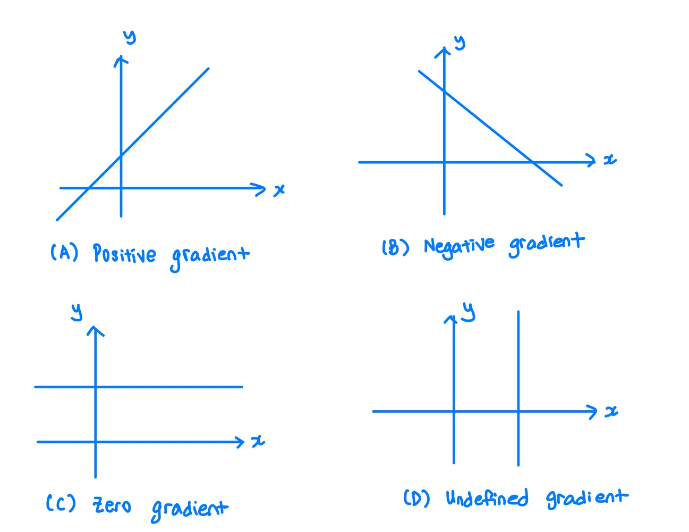
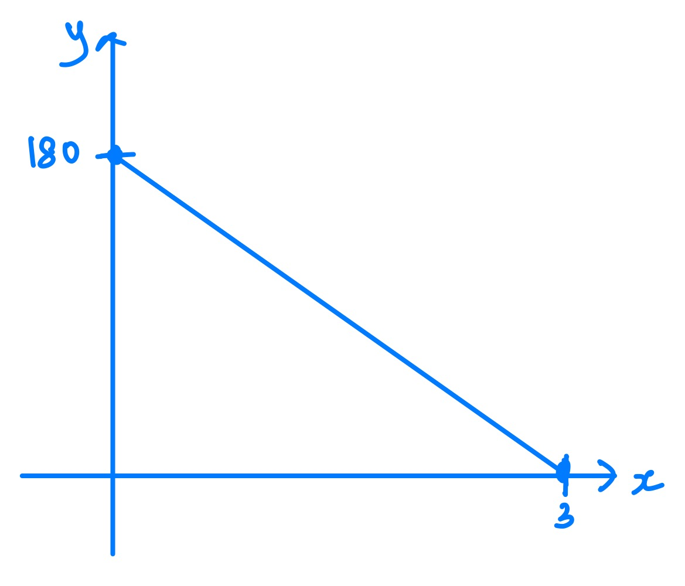

Functions - Linear Functions and Graphs
Skill Checklist
- I can find the length of a line segment \(\mathrm {AB}\), given the coordinates of point \(\mathrm A \) and point \(\mathrm B\).
- I can find the coordinates of the midpoint of a line segment \(\mathrm {AB}\), given the coordinates of point \(\mathrm A \) and point \(\mathrm B\).
- I can find the gradient of a line using (i) its equation, and (ii) two points on the line.
- I can state the relationship between the gradients of a pair of parallel lines.
- I can state the relationship between the gradients of a pair of perpendicular lines.
- I can find the equation of a straight line in gradient-intercept form \((y=mx+c)\), general form \((ax+by+c=0)\), and point-slope form \((y-y_1=m(x-x_1)\).
- I can find the equation of the perpendicular bisector of a line segment.
1. Distance between Two Points
Suppose we are given the points \(A\;(x_1,\;y_1)\) and \(B\;(x_2,\;y_2)\), as shown in the diagram below.

From Pythagoras' Theorem, we can see that \(AB^2=a^2+b^2\).
Since \(a^2=(x_1-x_2)^2\), and \(b^2=(y_1-y_2)^2\), we can then obtain the formula as given below.
From the Formulae Book (Topic 3 Prior Learning)
Distance between two points \((x_1,\;y_1)\) and \((x_2,\;y_2)\)
2. Midpoint of a Line Segment
Given two numbers, \(a\) and \(b\), the number that is exactly halfway between them can be found by taking their average.
For example, the number that is halfway between \(-2\) and \(5\) is \(\dfrac{-2+5}{2}\), which is \(\dfrac32\).
3. Linear Functions
The graph of a linear function looks like a straight line. In the graph below, when \(x\) increases by 1 unit, \(y\) always increases by the same amount. Here is an example of a linear function.

The graph below shows an example of a function that is not linear.

Which of the following are linear functions?
\(y=1-x,\quad y=\dfrac{1}{2x+1},\quad y=2x^2-1\)
Think!
In which of the following scenarios would a linear function be a good model for the relationship between \(x\) and \(y\)? Are there any assumptions that we need to make for the model to be appropriate?
-
The time that John spent walking \((x)\) and the total distance that he covered \((y)\)
-
The amount of time that a car is parked in a shopping mall \((x)\) and the total parking charges for the car \((y)\)
-
The age of a child \((x)\) and the height of the child \((y)\)
4. Gradients of Line Segments
The gradient of a line is a measure of how steep it is.
A line can have a gradient that is positive, negative, zero or undefined.

From the Formulae Book (2.1)
Gradient formula
In this case, \((x_1,\;y_1)\) and \((x_2,\;y_2)\) are two points on the line.
Calculate the gradient of the line passing through:
(i) \((1,\;3)\) and \((3,\;15)\);
(ii) \((3,\;1)\) and \((-2,\;\frac{7}{3})\);
(iii) \((2,\;4)\) and \((12,\;4)\);
(iv) \((8,\;-2)\) and \((8,\;-\frac13)\).
For a line with a gradient of \(m\), we can interpret this to mean that \(y\) changes by \(m\) when \(x\) increases by 1 unit.
A car is travelling at constant speed. The distance of the car from Town A, in kilometres, is represented by \(y\) and the time in hours that the car has been moving is represented by \(x\). The linear graph below shows how \(y\) varies as \(x\) changes.

Calculate the gradient of the line and interpret its value in context.